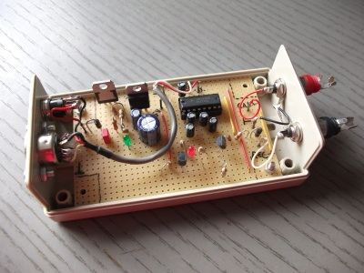

Um ein IBIS-Gerät über die serielle Schnittstelle (RS232) vom PC aus auzusteuern, braucht man einen Schnittstellenwandler der das Signal entsprechend umwandelt.
Experimente hatten ergeben das ein IBIS-Gerät mit einem RS232-Signal vom Rechner erstmal nichts anfangen konnte :)

Da kommerzielle Schaltungen zu teuer sind für Basteleien, mußte also etwas anderes her. Die Idee war außerdem das man ja warscheinlich nicht einen kompletten IBIS-Wagenbus (mit entsprechend vielen Geräten gleichzeitig) betreiben möchte, sondern immer nur ein Gerät zur Zeit, und somit etwas einfaches ausreicht.
Der Versuch ein TTL-Signal zu verwenden führte nach einiger Zeit zum Erfolg. Also benötigt man zunächst einen Wandler RS232 <-> TTL, der MAX232 ein integrierter Schaltkreis eignet sich hierzu hervorragend. Das Signal muß danach noch verstärkt werden für eine einwandfreie Funktion, auf 20 Volt. In manchen Fällen reichen sogar 12V. (Schaltung oben)
Die Spannungsversorgung wird mit Hilfe eines Stabis (5V) und eines LM317 (einstellbarer Spannungsregler) bereitgestellt. Der Max benötigt 5 Volt. Die 'Verstärkung' wird durch zwei Transistoren bewerkstelligt, welche hintereinander geschaltet sind. Dazu kommen noch zwei LEDs zur Signalanzeige.
Die Eingangsschaltung (Antwortbus) falls man sie denn überhaupt benötigt, besteht lediglich aus einem Abschwächer (Z-Diode und Widerstand).
Im Allgemeinen handelt es sich hier um eine Behelfsschaltung.
Mittlerweile existiert eine weitere Schaltung, die erfolgreich aufgebaut wurde.
Weitere Informationen zu den Schaltungen findet man im IBIS-World Forum.
(c) 2011 - 2013 Stephan Schütt, Alle Angaben ohne Gewähr. Vervielfältigung verboten.